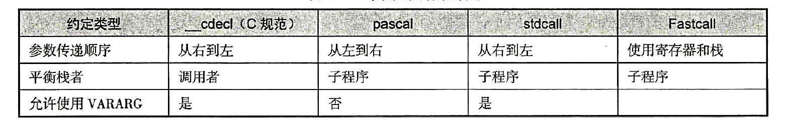

好久没写过博客了 因为在一直看底层的东西 不知道怎么写 程序都是由不同的函数组成的 逆向分析函数的识别及其参数的传递是很有用的
函数的识别
调用函数的代码中保存了一个返回地址，该地址会与参数一起传递给被调用的函数 使用call和ret指令来调用函数
call指令和jmp指令不同的是 call指令保存返回的信息 将其之后的指令压入栈的顶部 当遇到ret指令时返回到这个地址
因此 我们可以通过call和ret来判断函数的开始和结束
参数的传递
利用栈传递参数
栈是“先进后出”的储存区 调用函数时 调用者依次把参数压栈 然后调用函数 调用完函数后 再使栈恢复原样
传参时当参数多于1个时 按照什么方式入栈 如何平衡栈 不同的语言有不同的约定 如图：

函数对参数的存取及局部变量都是通过栈来定义的 非优化编译器用一个专门的寄存器（ebp）对阐述进行寻址 c c++ pascal等高级语言的函数执行过程基本一致：
调用者将函数执行完毕时应返回的地址 参数压入栈
子程序使用“ebp指针+偏移量”对栈中的参数进行寻址取出 完成操作
子程序使用ret或retf指令返回 此时 cpu将eip置为栈中返回的地址 完成操作
利用寄存器传递参数
寄存器传参为每一个参数分配一个寄存器 默认情况下第一个用eax 第二个用edx 第三个用ebx 第四个用ecx。如果用完的的话 就用栈传参
名称修饰约定
像c++和java这种语言允许使用操作符和函数重载 即允许相同函数名的出现 编译器将每个唯一的方法和参数列表组合编码成一个对链接器唯一的名字
函数的返回值
用return操作符返回值
一般境况下 函数的返回值存放在eax中返回 如果处理结果大小超过eax寄存器的容量 其高32位就会放到edx寄存器中
通过参数按传引方式返回值
给函数传递参数的方式有两种， 分别是传值和传引用。进行传值调用时， 会建立参数的一份复本， 并把它传给调用函数， 在调用函数中修改参数值的复本不会影响原始的变量值。传引用调用允许调用函数修改原始变最的值。调用某个函数， 当把变量的地址传递给函数时，可以在函数中用间 接引用运算符修改调用函数内存单元中该变量的值。例如， 在调用函数max时， 需要用两个地址 （或者两个指向整数的指针）作为参数，函数会将结果较大的数放到参数a所在的内存单元地址中返回